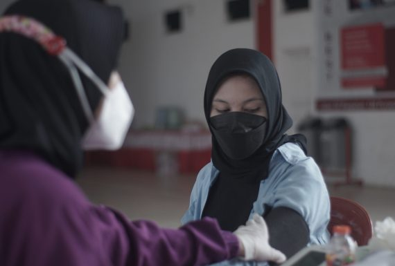
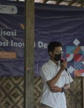
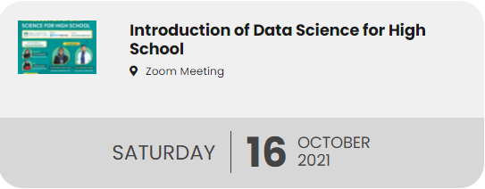
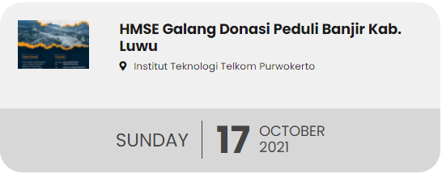

|
Tentang ITTP |
Pendidikan |
Prestasi |
Riset dan Teknologi |
Pendaftaran |

Prestasi ITTPITTP mendapatkan Prestasi dalam berbagai bidang, baik dalam skala Nasional maupun Internasion |
Lebih Dekat PurwokertoTemukan suasana hidup dan belajar di Purwokerto bersama dengan keindahan dan kesejukan kotanya |
Fasilitas dan Kegiatan kampusInformasi tentang ragam kegiatan mahasiswa dan berbagai fasilitas di Kampus ITTP |
Virtual Tour CampusKenali lingkungan kampus dengan lebih dekat |
Kenapa Harus Insitut Teknologi Telkom Purwokerto
Kampus Cepat KerjaTerbukti rata-rata 83% lulusan bekerja sebelum wisuda |
Terakreditasi BAN PTInstitut sudah terakreditasi "Baik Sekali" |
Go InternasionalMemiliki 25 kerjasama internasional |
Kampus NasionalMahasiswa berasal dari 31 provinsi di Indonesia |
TESTIMONI & OPINI
Kata Alumni
Bayu Rian Agung NBekerja di PT. Kereta Api IndonesiaBanyak pilihan kampus untuk kuliah, banyak pilihan program studi unutk mengembangkan diri, tapi saya mantap dan yakin Institut Teknologi Telkom Purwokerto tetap jadi pilihan ideal. Terima kasih ITTP. |
Pojok Opini

Kampus Bangkitkan Desa WisataTidak terasa sudah dua tahun berlalu negara kita menghadapi pandemi virus covid-19. Korban jiwa dan kerugian materil di semua sektor pemerintahan hampir semuanya terdampak pandemi covid-19. Rasa kebingungan dan was-was akan terjadinya gelombang kedua nampak terlihat di wajah para pemimpin kita, tak terkecuali Bapak Presiden Jokowi Dodo dan Menteri Pariwisata Ekonomi Kreatif Sandiaga Uno. Ya, |
BERITA & ACARA
Berita ITTP
|

Pendidikan Telkom Gelar Vaksinasi Massal untuk Civitas Kawasan Pendidikan Telkom dan Warga Purwokerto |

Sosialisasi dan Workshop Aplikasi Inovasi Desa Melung |

Dosen ITTP Selenggarakan Pengmas untuk Guru SD |
Acara ITTP
|  |  |
TV ITTP
KERJASAMA INSTITUSI DAN KORPORASI

|

|

|
INGIN LEBIH DEKAT DENGAN ITTP?
Yuk chat aja dan ikuti akun social media ittp|
@ittelkompurwokerto |
@ittelkompurwokerto |
08112616116 |
YoutubeOfficial IT Telkom Purwokerto |